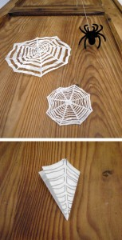
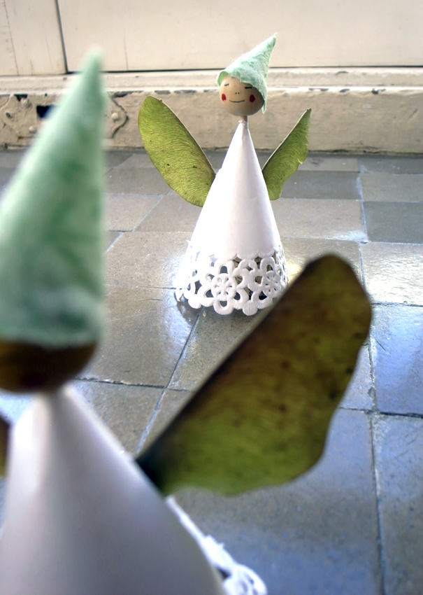

Spider web:
Spider web made of paper for Halloween.
Telaraña hecho de papel para Halloween.


Spider web:

El calendario de adviento de Hannah. ¡Hoy se abre el primer número! The Advent calendar of Hannah . Today she will open the first number. Der…
Read more →

Hemos cortado los dos extremos de unos globos. En su parte central hemos hecho unos agujeros y luego hemos forrado unos vasos. Party jars: We have…
Read more →
uirlanda de árboles de navidad Hemos cortado algunas hojas de ficus con la silueta de un árbol de navidad Festoon of Christmas trees We've cut some…
Read more →
Ángeles para decorar el árbol de navidad. Angels Angels as Christmas tree decoration. Engel Engel als Weihnachtsbaum Schmuck.
Read more →
Papa Noel hecho con Lego. Zoom: Santa Claus made out of Lego. Zoom: Der Weihnachtsmann aus Lego. by Hannah
Read more →